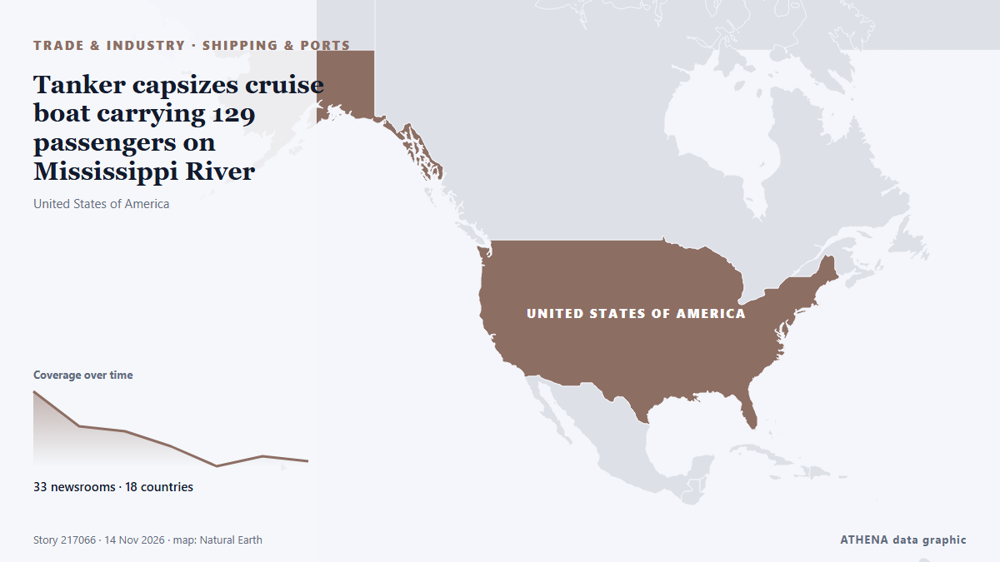

Ναυτιλία
Ναυτιλία και θαλάσσια περάσματα σήμερα
Τελευταίο 24ωρο — γεγονότα: 29, χώρες: 22. Υψηλότερος κίνδυνος τώρα: 5.8 — UN rights chief demands Houthis return body of Yemeni staff member.

Εμπόριο & ΒιομηχανίαTanker capsizes cruise boat carrying 129 passengers on Mississippi River
Rescue efforts are in progress after a tanker collided with a river cruise boat on the Mississippi River, causing the boat to partially submerge. από Arab News
| 1 Νοε | 15 |
|---|---|
| 2 Νοε | 32 |
| 3 Νοε | 19 |
| 4 Νοε | 15 |
| 5 Νοε | 19 |
| 6 Νοε | 17 |
| 7 Νοε | 15 |
| 8 Νοε | 9 |
| 9 Νοε | 25 |
| 10 Νοε | 24 |
| 11 Νοε | 26 |
| 12 Νοε | 12 |
| 13 Νοε | 12 |
| 14 Νοε | 0 |
Ναυτιλιακό γραφείο: λιμάνια, διαδρομές και περιστατικά →
Παρακολούθηση
Τελευταία
Iran: 7 ships hit in the Strait of Hormuz
Iran said on Thursday its navy hit seven oil tankers traveling through the Strait of Hormuz, threatening to exacerbate regional tensions and the global energy crisis that is driving inflation. από The Hill
IRGC claims two oil tankers hit naval mines in Hormuz
"One of the vessels is a supertanker; it is currently engulfed in flames following a powerful explosion," the Iranian Revolutionary Guard Corps (IRGC) Navy spokesperson said. από The Jerusalem Post
Coalition Destroys 5 Houthi Ballistic Missiles, 4 Drones Fired at Saudi Arabia
Riyadh: Saudi forces on Tuesday intercepted a ballistic missile aimed at the kingdom's capital, said a spokesman for the Riyadh-led coalition backing Yemen's government, after auth... από Oman Observer
Sisi says Egypt would defend Saudi territory but rules out attack on Yemen
CAIRO, Oct 21 - Egyptian President Abdel Fattah al-Sisi said Egypt's military support for Saudi Arabia would be limited to defending the kingdom's territory and borders and would not include an… από The Straits Times
US orders diplomats to depart Saudi Arabia amid Houthi strikes
It comes after an escalation of the fighting in Yemen, opening another front in the Middle East conflict. από The Straits Times
CONTSHIP JET Container Ship Sinks After Drone Attack in Black Sea
The CONTSHIP JET sank after being struck by three drones off Bulgaria; 18 crew rescued, and 20 containers fell into the sea. από SeaNews Türkiye
US Strikes Iranian Targets in the Strait of Hormuz, Official Says
The drop reflects traders trimming some of the geopolitical premium built into crude in recent weeks rather than any change in physical supply, which remains constrained while Hormuz flows are… από investingLive (ForexLive)
Iran says tanker carrying LNG hit mine, suffered explosion in Strait of Hormuz
Iran's Revolutionary Guards navy said a tanker carrying liquefied natural gas struck a naval mine and suffered an explosion in the Strait of Hormuz on Friday while using what they described was an… από Deccan Herald
Saudi Arabia flight update: India-bound services resume from Riyadh, Indian Embassy says
Riyadh went quiet, but Saudi airspace didn't: where flights went after the airport attacks. από Simple Flying
Egypt approves military support for Saudi Arabia after Houthi attacks escalate
Saudi Arabia is a major political, financial partner of Cairo, providing billions of dollars in aid, energy supplies. από Express Tribune
Filipino seafarer killed in Persian Gulf tanker explosion
A Filipino seafarer died after an explosion aboard the Marshall Islands-flagged oil products tanker MT Velos Sapphire in the Persian Gulf on 5 November, the… από Daily Tribune
Iran war latest: UAE rescues 22 crew members from burning cargo ship in Gulf of Oman
TAMPA, Fla., Nov 7: U.S. Central Command (CENTCOM) forces disabled a commercial vessel in the Gulf of Oman, Nov. από Arab Times
Τι καλύπτει η σελίδα
Πάνω από το 80% του παγκόσμιου εμπορίου κατά όγκο μεταφέρεται δια θαλάσσης (UNCTAD), και λίγα στενά περάσματα εξυπηρετούν μεγάλο μέρος του. Η σελίδα παρακολουθεί περιστατικά, διαταραχές σε λιμάνια και κίνδυνο στα στενά, όπως τα αναφέρουν ανεξάρτητα μέσα, με βαθμό κινδύνου για κάθε γεγονός.
Ο ελληνικός εμπορικός στόλος είναι από τους μεγαλύτερους στον κόσμο, γι' αυτό τα γεγονότα στη θάλασσα μετράνε εδώ περισσότερο από ό,τι σε άλλες χώρες. Το Ναυτιλιακό γραφείο προσθέτει την κατάσταση λιμανιών και διαδρομών.
Τι παρακολουθούμε
- Στενά του Ορμούζ και Κόλπος
- Ερυθρά Θάλασσα και Μπαμπ ελ Μαντέμπ
- Διώρυγα του Σουέζ
- Στενά του Βοσπόρου και Μαύρη Θάλασσα
- Διώρυγα του Παναμά
- Κυρώσεις σε δεξαμενόπλοια και ο «σκιώδης στόλος»